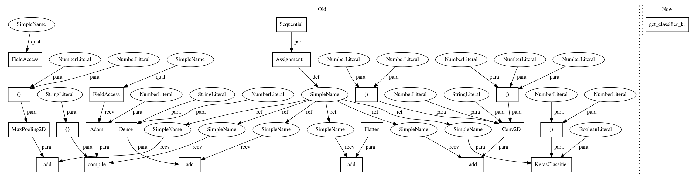

347c815a1cfebd378d8723fe9ca02ff4361b4509,tests/attacks/test_knockoff_nets.py,TestKnockoffNets,test_keras_classifier,#TestKnockoffNets#,133
Before Change
victim_krc = get_classifier_kr()
// Create simple CNN
model = Sequential()
model.add(Conv2D(1, kernel_size=(7, 7), activation="relu", input_shape=(28, 28, 1)))
model.add(MaxPooling2D(pool_size=(4, 4)))
model.add(Flatten())
model.add(Dense(10, activation="softmax"))
loss = keras.losses.categorical_crossentropy
model.compile(loss=loss, optimizer=keras.optimizers.Adam(lr=0.001), metrics=["accuracy"])
// Get classifier
thieved_krc = KerasClassifier(model, clip_values=(0, 1), use_logits=False)
// Create random attack
attack = KnockoffNets(classifier=victim_krc, batch_size_fit=BATCH_SIZE, batch_size_query=BATCH_SIZE,
nb_epochs=NB_EPOCHS, nb_stolen=NB_STOLEN, sampling_strategy="random")
After Change
victim_krc = get_classifier_kr()
// Create the thieved classifier
thieved_krc = get_classifier_kr(load_init=False)
// Create random attack
attack = KnockoffNets(classifier=victim_krc, batch_size_fit=BATCH_SIZE, batch_size_query=BATCH_SIZE,
nb_epochs=NB_EPOCHS, nb_stolen=NB_STOLEN, sampling_strategy="random")
In pattern: SUPERPATTERN
Frequency: 3
Non-data size: 21
Instances
Project Name: IBM/adversarial-robustness-toolbox
Commit Name: 347c815a1cfebd378d8723fe9ca02ff4361b4509
Time: 2020-01-16
Author: M.N.Tran@ibm.com
File Name: tests/attacks/test_knockoff_nets.py
Class Name: TestKnockoffNets
Method Name: test_keras_classifier
Project Name: IBM/adversarial-robustness-toolbox
Commit Name: 347c815a1cfebd378d8723fe9ca02ff4361b4509
Time: 2020-01-16
Author: M.N.Tran@ibm.com
File Name: tests/attacks/test_knockoff_nets.py
Class Name: TestKnockoffNets
Method Name: test_keras_classifier
Project Name: IBM/adversarial-robustness-toolbox
Commit Name: 65007a1aebc07f13513f3feab3831a14ed72e732
Time: 2019-02-13
Author: beat.buesser@ie.ibm.com
File Name: art/attacks/newtonfool_unittest.py
Class Name: TestNewtonFool
Method Name: test_krclassifier
Project Name: IBM/adversarial-robustness-toolbox
Commit Name: c0e9a520c944e971b0ea53a9e81142e2e6bbab64
Time: 2019-02-13
Author: beat.buesser@ie.ibm.com
File Name: art/attacks/universal_perturbation_unittest.py
Class Name: TestUniversalPerturbation
Method Name: test_krclassifier